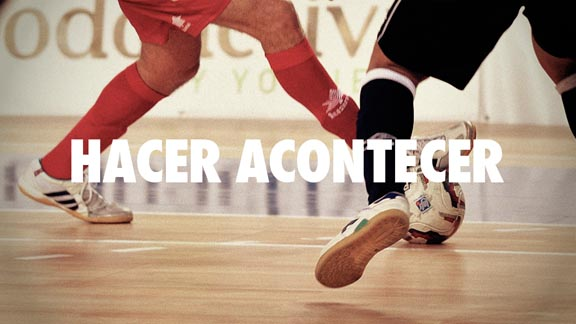

El 3 de diciembre del año 2000, en el Domo de Guatemala, la Selección Española de Fútbol Sala se proclamaba campeona del mundo por primera vez en su historia logrando uno de los mayores triunfos deportivos conseguidos hasta entonces por el deporte español.
Las imágenes de la final ante Brasil, rescatadas de los archivos de Canal+, tienen la textura del paso del tiempo, pero la emoción al verlas hoy, más de diez años después, sigue siendo indescriptible. Las paradas imposibles de Jesús Clavería, los goles de Javi Rodríguez, las gradas desbordadas con miles de espectadores animando, el banquillo al completo de pie, las lágrimas de Javi Sánchez, la voz quebrada de los comentaristas tras el pitido final, los abrazos, los saltos de alegría de todo el equipo; aquel mundial, narrado recientemente por todos los miembros del equipo, directivos, jugadores y equipo técnico, en el libro “El origen de las estrellas”, cambió la historia del fútbol sala español para siempre. Una lección maravillosa de verdadero deporte, ejemplo de un equipo unido, comprometido y entusiasmado. Sin duda, un punto de inflexión en el devenir histórico del fútbol sala que marcó el comienzo de los posteriores éxitos del deporte español a nivel internacional.
Kike Boned, actual capitán de ElPozo Murcia Turística FS y uno de los pilares fundamentales de la Selección Nacional, formó parte de aquel equipo campeón del mundo en el año 2000. Entonces era el jugador más joven, casi sin experiencia a nivel internacional y todavía con poca participación en los partidos, pero aquel mundial significó para él un aprendizaje valiosísimo, deportivo y humano, que marcó su trayectoria deportiva convirtiéndose en un referente absoluto del fútbol sala actual.
Pero aquella victoria en Guatemala, los subsiguientes triunfos de la selección (2 mundiales y 5 europeos), el espectáculo que trajeron a España jugadores míticos como Paulo Roberto, la calidad actual de la Liga Nacional y los miles de aficionados que siguen y practican este deporte en todo el mundo, no han servido para dar al fútbol sala todo el reconocimiento y el apoyo que merece. Y no sólo el fútbol sala, nos hemos acostumbrado a que los medios de comunicación se olviden de un sinfín de profesionales del deporte que se esfuerzan diariamente por conseguir sus metas.
Por eso queremos hacer este documental, para darle voz a un deporte que ha ofrecido muchas cosas y que tiene todavía muchas cosas que ofrecer, porque creemos que merece un reconocimiento mucho mayor, por su historia pasada y por su gran momento actual. Y queremos hacerlo retratando a uno de sus máximos representantes: Kike Boned, a los 33 años se encuentra en la recta final de su carrera deportiva. Por eso, y por su brillante palmarés, queremos reunir los momentos más significativos de una larga trayectoria profesional y conocer, a través de su experiencia, cómo ha sido la evolución del fútbol sala español desde aquella mágica victoria del año 2000. Queremos volver al principio y avanzar hacia delante, integrar la experiencia individual y la colectiva, para contar cómo ha sido el camino de un jugador que ha vivido en primera persona algunos de los momentos más importantes de la historia de este deporte.